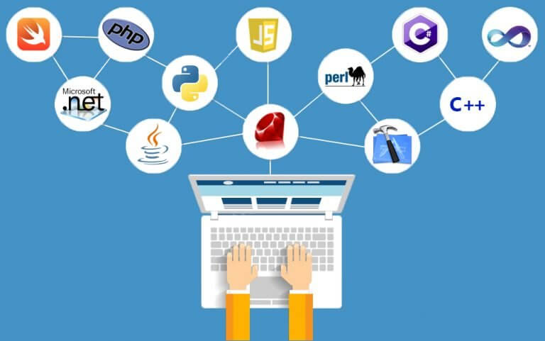

Bahasa Pemrograman
Hypertext Markup Language (HTML)
HTML adalah bahasa markup yang umumnya digunakan untuk menyusun bagian paragraf, heading, maupun link pada halaman web. Namun, meskipun susunannya seperti coding, perlu diketahui bahwa HTML bukanlah bahasa pemrograman. HTML tidak dianggap sebagai bahasa pemrograman karena tidak bisa memberikan fungsi yang dinamis. Sekarang, bahasa markup ini dianggap sebagai standar web resmi, dikelola oleh World Wide Web Consortium (W3C), yang juga bertugas merilis pembaruan rutin HTML.
Cascadin Style Sheets (CSS)
CSS adalah bahasa Cascading Style Sheet dan biasanya digunakan untuk mengatur
tampilan elemen yang tertulis dalam bahasa markup, seperti HTML. CSS berfungsi untuk
memisahkan konten dari tampilan visualnya di situs.
CSS dibuat dan dikembangkan oleh W3C (World Wide Web Consortium) pada tahun 1996
untuk alasan yang sederhana. Dulu HTML tidak dilengkapi dengan tags yang berfungsi
untuk memformat halaman. Anda hanya perlu menulis markup untuk situs.
HTML dan CSS memiliki keterikatan yang erat. Karena HTML adalah
bahasa markup (fondasi situs) dan CSS memperbaiki style (untuk semua aspek
yang terkait dengan tampilan website), maka kedua bahasa pemrograman
ini harus berjalan beriringan.
JavaScript
JavaScript adalah skrip pemrograman ringan yang umumnya digunakan oleh web developer untuk menciptakan interaksi yang lebih dinamis saat membuat halaman web, aplikasi, server, atau game. Web developer biasanya menggunakan JavaScript bersama HTML dan CSS karena ketiganya bisa bekerja sama tanpa masalah. JavaScript adalah skrip pemrogramannya, HTML berfungsi untuk menyusun struktur website, dan CSS untuk mendesain serta mengatur layout halaman website.
Tabel Bahasa Pemrograman
Berikut adalah contoh tabel sederhana yang berisi bahasa pemrograman populer:
| Bahasa | Tahun Diperkenalkan | Paradigma |
|---|---|---|
| Python | 1991 | Multi-paradigma |
| JavaScript | 1995 | Event-driven, Fungsional |
| C++ | 1985 | Berorientasi Objek |